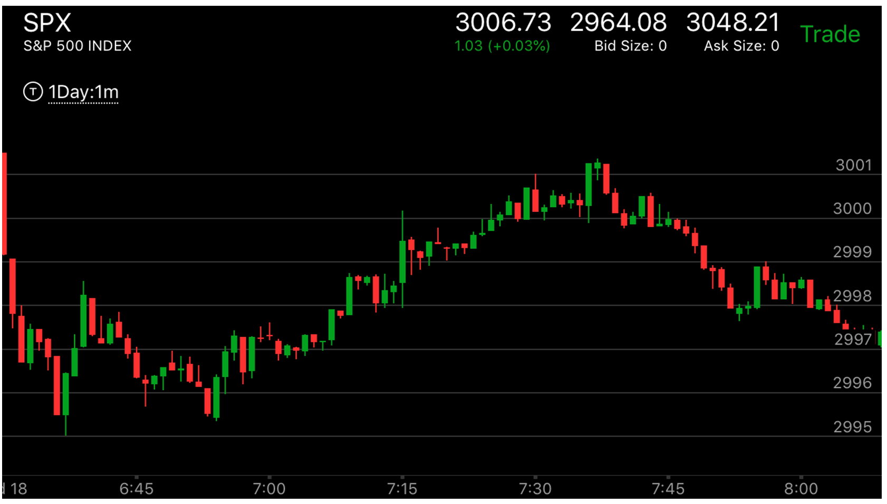

市场利用相对幅度制造的心理陷阱
- 如果我想做多，希望在一个低点，它下跌后，立刻拉回，再次下跌，我想着在前面的低点买入，结果它停留在半路，走平。
我着急，就干脆提高价格，结果这个是分两段下跌。幅度更大。
- 我想做空，它上涨后，立刻拉回，然后再次上涨，结果不到高点，半路走平，我着急。干脆低点做空。结果它是分段上涨。
幅度更大。

图示：由于盘前第一浪很大，我想做空。它在8：40反弹幅度很大，很快下来。再次7：00反弹，幅度很小。
我着急做空。就在2997做空了。结果它是分段上涨。直到填满真空为止。

图示：我被直觉影响，想做多。7：15它下来反弹很快。我想在同样的点做多。结果它在7：30
下来后停止，走平，我着急，在3014做多。结果它大跌。是分段下跌。跌的更多。